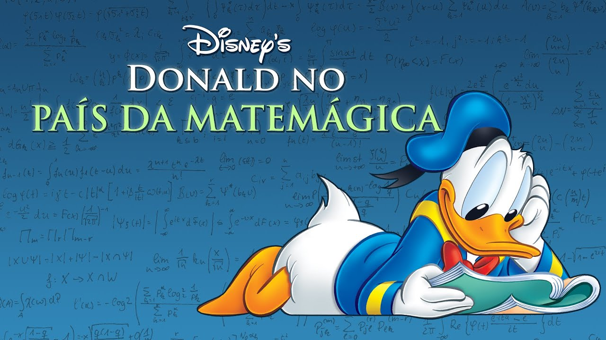

A importância dos conceitos de Matemática
A importância da busca de conceitos matemáticos se faz necessária a fim de desmistificar que a Matemática é ruim ou que não é necessária no mundo em que vivemos. O projeto “Donald no País da Matemágica” a ser realizado na Escola Municipal Professora Maria Olintha irá servir aos alunos para uma maior aproximação entre conceitos de números, figuras geométricas e construção de conhecimento de geometria, medições e comparações.
Pitágoras, um gênio em Matemática... e Filosofia também

Pitágoras e os pitagóricos foram os primeiros a estabelecer a demonstração com base num
raciocínio dedutivo. A eles se deve também a palavra Matemática que para eles significava
"ciência por excelência". A Escola Pitagórica, fundada em Crotona, admitia pessoas de ambos
os sexos. Aliás, Teano, a esposa de Pitágoras, foi provavelmente a primeira matemática da
história.
No entanto, os membros desta irmandade estavam sujeitos a normas muito rigorosas pois tinham
que viver castamente, seguir uma dieta rigorosa e manter uma atitude contida e sossegada.
Era proibido o riso e deviam cultivar o hábito da autocrítica.Os alunos estavam divididos em
dois grupos, os externos e os internos.
Só os alunos internos tinham contacto directo com Pitágoras. Os alunos externos viam Pitágoras
apenas depois de quatro anos de curso, durante os quais recebiam as suas lições escritas e
autenticadas com a fórmula "autos efa" que significa "o que ele disse", para dar a entender
que não existia discussão possível.
O inventor, físico e matemático grego Arquimedes
O inventor, físico e matemático grego Arquimedes deu grandes contribuições para o mundo. Tendo criado o conceito de "gravidade específica", sua descoberta ficou consagrada como o Princípio de Arquimedes. Reza a lenda que, depois de ter muito estudado, chegou a conclusão que "Qualquer corpo mais denso que um fluido, ao ser mergulhado neste, perderá peso correspondente ao volume de fluido deslocado", fundando o princípio que leva seu nome, ficou tão feliz com a descoberta que saiu gritando porta afora: "Eureka!" Nascido na Sicília, filho de um astrônomo, Arquimedes foi criado numa casa que recebia inúmeros intelectuais e cientistas. O jovem teve acesso, portanto, ao melhor da educação que havia na sua época. Em termos de invenções, o matemático também criou o Parafuso de Arquimedes e a alavanca (um instrumento de guerra que possibilitava cargas pesadas serem levantadas).
Euclides, o pai da Geometria
O pai da Geometria foi professor de Matemática na escola que ajudou a fundar - a Escola Real de Alexandria (no Egito) - e nos deixou como legado o livro Elementos de Euclides. Na obra, com 13 volumes, Euclides faz uma reunião dos conhecimentos matemáticos de todos os tempos - incluindo os trabalhos de Tales, Pitágoras, Platão e os próprios estudos. A obra, didática, foi adotada como livro de base por gregos e romanos durante um longo período - desde a Idade Média até o Renascimento. Outro legado fundamental deixado pelo matemático foi o Postulado das Paralelas: "Se uma reta, interceptando duas outras, forma ângulos internos do mesmo lado, menores do que dois ângulos retos, estas outras, prolongando-se ao infinito, encontrar-se-ão no lado onde os ângulos sejam menores do que dois ângulos retos", lembra.